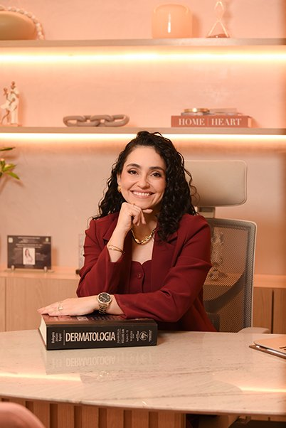

Cicatriz de acne não começa pela técnica. Começa pela decisão clínica.
Em 1 dia, a Dra. Caroline Baima ensina o Método A3: o raciocínio para classificar, planejar e associar técnicas com segurança, inclusive em fototipos altos e mesmo sem Laser CO2.
Dermatologista · Mestre e doutora · Professora e preceptora de residência · RQE 2539
R$ 97ingresso para o evento ao vivo
Quero garantir meu ingresso
Pagamento seguro · Pix ou cartão · Garantia de 100% · Certificado incluso

▶ Vídeo da Dra. · 60 a 90 s"Eu tenho cicatriz" → "cicatriz não começa pela técnica, começa pela decisão clínica" → o que você vai aprender → convite para o dia 17.